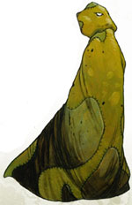
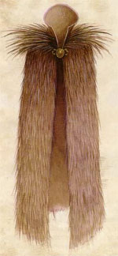
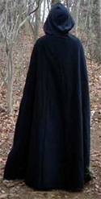
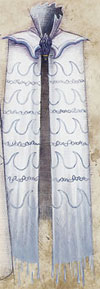
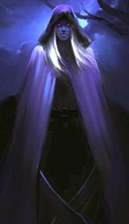
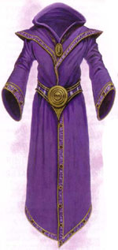
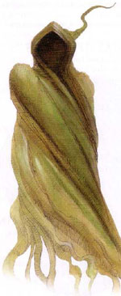

I
mantelli e le vesti magiche possono essere suddivise in base
alla potenza dell'incantamento magico. Laddove non diversamente specificato si
consideri che un mantello in tessuto ha un peso pari a 2 libbre.
I poteri magici, quindi possono essere suddivisi in:
|
POTENZA DELL'INCANTAMENTO |
PUNTI ESPERIENZA |
| Minor Enchantment* | da 75 a 375 punti esperienza |
| Lesser Enchantment | da 500 a 999 punti esperienza |
| Superior Enchantment | da 1000 a 1499 punti esperienza |
| Greater Enchantment | da 1500 a 2999 punti esperienza |
| Extraordinary Enchantment | da 3000 punti esperienza in poi |

| OGGETTO | Cloak of Vermin |
| POTENZA | Oggetto Maledetto (0 xp, 2.000 gp) |
|
DESCRIZIONE
 |
Questo mantello magico appare avente l'aspetto e la consistenza fisica e, se sottoposto ai comuni metodi di identificazione magica (detect magic, identify, ecc...), i poteri magici di un qualsiasi altro mantello magico (cloak o mantle), non maledetto, selezionato casualmente. La vera natura maledetta di questo mantello, però, si rivela quando chi lo indossa si trova in una qualsiasi situazione di combattimento. Quando ciò si verifica il mantello assumerà la sua vera forma consistente in un ammasso di stracci laceri, sporchi e cuciti malamente l'uno con l'altro e diventerà letteralmente brulicante di insetti e vermi che inizieranno a pungere ed ad infastidire chi lo indossa. Costui sarà considerato a tutti gli effetti incapacitato per l'intera durata del combattimento. Una volta rivelata la natura maledetta del mantello, lo stesso non potrà essere rimosso dal corpo della vittima al quale si avvilupperà inesorabilmente. L'unico metodo per rimuovere il mantello consiste nel lanciare con successo una magia di Remove Curse. |

| OGGETTO | Cloak of Quills |
| ORIGINE | MAGICA |
| POTENZA | Lesser Enchantment (500 xp, 5.000 g.p.) |
| SCUOLA DI MAGIA | ABJURATION |
|
DESCRIZIONE
 |
Questo mantello magico con
cappuccio è realizzato interamente con spine di istrice o di altri
animali similari.
Questo lungo mantello ha un peso pari a 3 libbre. L'incantamento magico
di questo mantello può essere attivato una volta ogni 24 ore. L'attivazione si considera una
free action con componenti vocali
(parola magica di attivazione) e somatici, che non richiede il
mantenimento della concentrazione e che impone una penalità
all'iniziativa nel round pari a +3. Quando questo mantello è attivato le
spine in esso presenti si drizzeranno e chi lo indossa godrà
dell'abilità speciale "spine" per l'intera durata dell'effetto magico
che è pari a 10 round. |
| OGGETTO | Cloak of the Shadows |
| ORIGINE | MAGICA |
| POTENZA | Lesser Enchantment (800 xp, 8.000 g.p.) |
| SCUOLA DI MAGIA | NECROMANCY |
|
DESCRIZIONE
 |
Questo mantello magico con
cappuccio deve essere interamente realizzato di puro velluto nero.
L'incantamento magico di
questo mantello nero garantisce a chi lo indossa i seguenti benefici: |
| OGGETTO | Cloak of Water Domain |
| ORIGINE | DIVINA - ERAM / FORZE DELLA NATURA |
| POTENZA | Lesser Enchantment (500 xp, 5000 gp) |
| SCUOLA DI MAGIA | ALTERATION |
|
DESCRIZIONE  |
Questo mantello magico è di
colore celeste, azzurro chiaro o blu. L'incantamento magico di
questo mantello garantisce costantemente a chi lo indossa il potere del
dominio dell'acqua: |
| OGGETTO | Mantle of the Night |
| ORIGINE | DIVINA - KALIAN |
| POTENZA | Superior Enchantment (1000 xp, 10000 gp) |
| SCUOLA DI MAGIA | NECROMANCY |
|
DESCRIZIONE  |
Chi indossa questo mantello
viene costantemente avvolto dal velo tenebroso della dea Kalian.
Il velo
oscuro conferirà a chi indossa il mantello i seguenti benefici: |
| OGGETTO | Mantle of the Predator |
| ORIGINE | MAGICA |
| POTENZA | Lesser Enchantment (700 xp, 7000 gp) |
| SCUOLA DI MAGIA | ALTERATION |
|
DESCRIZIONE
|
Questo mantello magico creato
con pelli di animali predatori è soffice e caldo al contatto ed ha un peso pari a 2,5 libbre. L'incantamento magico di
questo mantello garantisce costantemente a chi lo indossa i seguenti
benefici: |
| OGGETTO | Mantle of Thorns |
| ORIGINE | DIVINA - ARLINIR |
| POTENZA | Lesser Enchantment (600 xp, 6000 g.p.) |
| SCUOLA DI MAGIA | CONJURATION |
DESCRIZIONE |
Su tutta la superficie di questo
lungo mantello di colore verde, che ha un peso pari a 2,5
libbre, sono presenti spine acuminate. Il mantello dona a chi lo indossa riceve i seguenti
benefici: * Questo mantello può essere attivate una volta ogni flusso di energia divina di Arlinir da chi lo indossa. L'attivazione si considera un'azione complessa con componenti vocali (preghiera ad Arlinir) e somatici, che non richiede il mantenimento della concentrazione e che ha un fattore iniziativa pari a +3. Dal mantello partiranno dunque una moltitudine spine che colpirà ogni creatura presente in un'area sferica di 21 metri di diametro centrata su chi indossa il mantello. Le vittime che si trovano ad un esagono di distanza subiranno 1d12 danni comuni da punta, quelle che si trovano a due esagoni di distanza subiranno 1d10 danni comuni da punta e quelle che si trovano a tre esagoni di distanza subiranno 1d8 danni comuni da punta. Tutte le vittime potranno superare un tiro salvezza su riflessi per dimezzare i danni subiti. Per ogni punto di classe armatura della vittima inferiore ad AC 5 la stessa riceve un bonus di +1 al suddetto tiro salvezza, fino ad un bonus massimo di +5 al tiro salvezza per le creature che posseggono una classe armatura pari od inferiore ad AC 0. Le vittime che falliscono il tiro salvezza, inoltre, oltre a subire interamente il danno, si considereranno anche incapacitate per il resto del round in corso a causa del dolore subito (le creature immuni al dolore e quelle che, possedendo la competenza Pain Tollerance, riescono in una prova nella stessa non subiranno questi gli effetti secondari dell'incantamento). |
| OGGETTO | Robe of Magic School |
| ORIGINE | MAGICA |
| POTENZA | Superior Enchantment (1250 xp, 12500 gp) |
| SCUOLA DI MAGIA | ENCHANTMENT |
|
DESCRIZIONE  |
Questo tunica magica, che può
essere creata in comune tessuto od in
Eldron,
può essere indossata validamente solo dagli utenti di magia. Quando
viene incantata la tunica deve essere necessariamente legata ad una
determinata scuola di magia (se l'oggetto viene ritrovato si tiri
casualmente: 1) Abjuration;
2) Alteration;
3) Charm;
4) Divination;
5) Enchantment;
6) Evocation;
7) Illusion;
8) Necromancy;
9) Summoning;
10) Ripetere il tiro). L'incantamento magico di
questa tunica, dunque, mantello garantisce costantemente a chi lo indossa
il seguente beneficio: |
| OGGETTO | Shadow Veil |
| ORIGINE | MAGICA |
| POTENZA | Greater Enchantment (1500 xp, 15000 gp) |
| SCUOLA DI MAGIA | NECROMANCY |
|
DESCRIZIONE  |
Questo mantello è creato
interamente con vesti indossati da non morti. Questo mantello si attiva automaticamente quando chi lo indossa
si trova in una zona illuminata da una qualsiasi fonte di illuminazione
in grado di illuminare in un raggio inferiore a 12 metri costui viene
pervaso dai poteri delle ombre. Il mantello non darà alcun beneficio
qualora chi lo indossa si trova alla luce del giorno, alla luce di una
fonte capace di illuminare entro 12 metri di raggio oppure al buio
assoluto. Quando il mantello è attivo chi lo indossa riceve i seguenti
benefici: * La creatura riceverà costantemente il 25% di immunità ai danni da energia negativa, agli effetti riferibili alla scuola Necromancy che siano capaci di influire solo sulle creature dotate di un corpo organico basato sull'energia positiva nonché alle lesioni all'energia vitale effettuate tramite risucchio di energia positiva. |
| OGGETTO | Tabard of Valor | ||||||||||||||||||||||||||||||||||||
| ORIGINE | DIVINA (Comune a tutte le divinità) | ||||||||||||||||||||||||||||||||||||
| POTENZA | Lesser Enchantment (800 xp, 8000 gp) | ||||||||||||||||||||||||||||||||||||
| SCUOLA DI MAGIA | SUMMONING | ||||||||||||||||||||||||||||||||||||
|
DESCRIZIONE
|
Questo indumento magico ha un
peso pari ad 1,5 libbre. L'incantamento magico di questo indumento si
attiva automaticamente quando nel raggio di 30 metri da chi lo indossa
si debba confrontare con più creature ostili rispetto alle creature
alleate (nel calcolo deve essere ricompreso anche chi indossa questo
oggetto magico). Si noti che devono essere considerate solo le creature
delle quali chi indossa l'oggetto magico abbia concreta e diretta
percezione non potendo essere considerate, ad esempio, creature
nascoste, invisibili (anche qualora chi indossa l'oggetto possa
sospettare della loro presenza). Creature alleate od ostili che
possiedono un ammontare di dadi vita/livelli inferiori alla metà
(arrotondata per difetto) del livello di esperienza di chi indossa
l'oggetto saranno considerate solo come metà creatura ai fini del
suddetto calcolo. Creature alleate od ostili che possiedono un ammontare
di dadi vita/livelli inferiori ad un terzo (arrotondato per difetto) del
livello di esperienza di chi indossa l'oggetto non saranno considerate
ai fini del suddetto calcolo. Si consulti la seguente tabella:
L'incantamento resterà attivo fino a che la suddetta condizione è rispettata. Quando il mantello è attivo la creatura che lo indossa riceve un bonus del +1 al tiro per colpire, di +1 ai danni (considerato a tutti gli effetti come dovuto alla forza), di +5% a tutti i tiri salvezza. Si noti che tutti questi benefici devono considerarsi bonus di origine divina e come tali non possono cumularsi con altri bonus di origine divina incidenti sui medesimi effetti o le medesime statistiche. |
| OGGETTO | Tunic of Earth Domain |
| ORIGINE | DIVINA - BAZARÀK / FORZE DELLA NATURA / SRODAN |
| POTENZA | Lesser Enchantment (600 xp, 6000 gp) |
| SCUOLA DI MAGIA | ALTERATION |
DESCRIZIONE |
Questa tunica del colore del
terriccio ha un peso pari a 2 libbre. L'incantamento magico di
questa tunica garantisce costantemente a chi lo indossa il potere del
dominio della terra: |